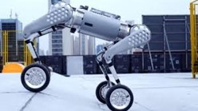
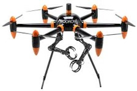
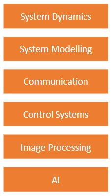
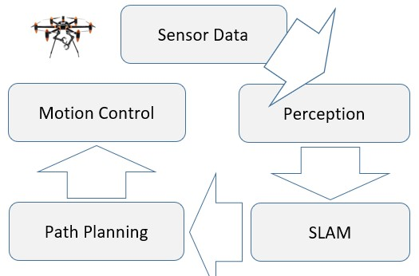
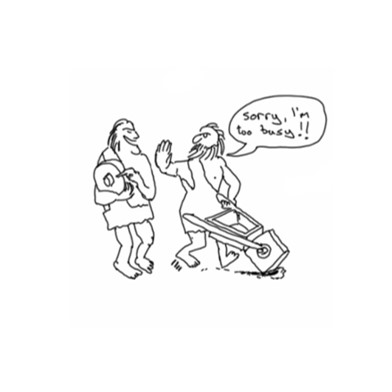
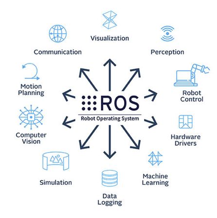
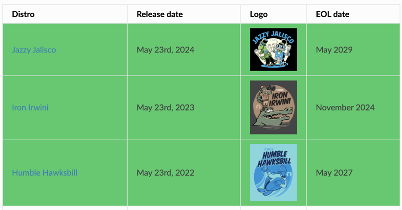
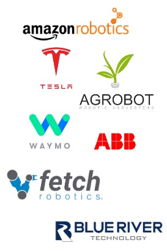
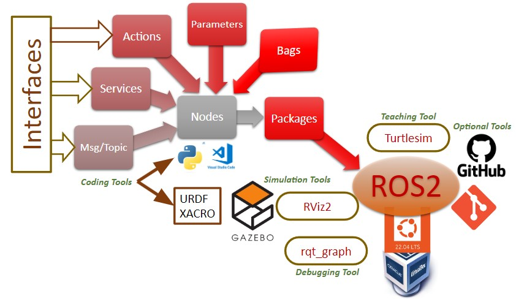
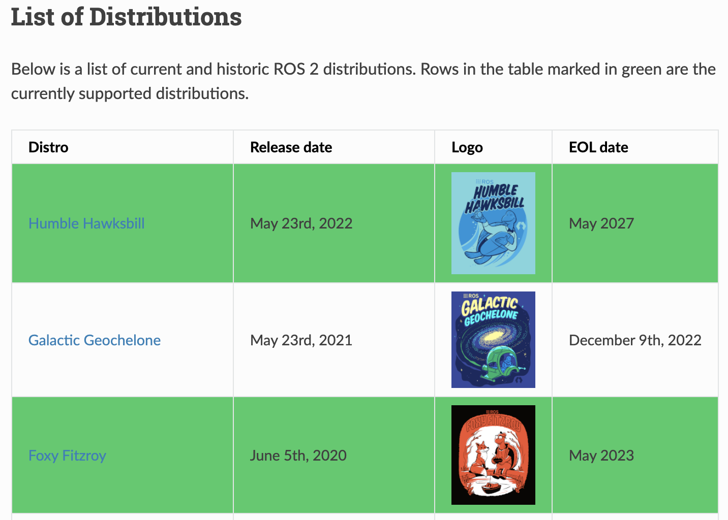

ROS (Robot Operating System) Course

Robots
A robot is an integrated system made up of sensors, actuators, controllers, power supply and software which work co-dependently to perform a task.
Robotics Industry Association (RIA) defines robots as a re-programmable, multifunctional manipulator designed to move material, parts, tools or specialized devices through variable programmed motion for a variety of tasks.
It uses multi disciplinary approach and requires basic understanding of Physics, Mathematics, Engineering, Computing etc.
Characteristics of Robots
Robot is a machine but all machines are not robots as it should possess certain anthropomorphic characteristics.
Sensing
-
Light Sensor - Eyes
-
Touch Sensor - Hand
-
Chemical Sensor - Nose
-
Sonar Sensor - Ear
-
Taste Sensor - Tongue
Movement
-
Rolling Wheel
-
Walking Leg
-
Propelling action
Energy
-
Solar
-
Electric
-
Battery
Intelligence
-
AI
-
Software
-
Control
Major Components of Robot
Sensors:
Sensors are used to collect information about the internal state of the robot or to communicate with the outside environment. Robots are often equipped with external sensory devices such as a vision system, touch and tactile sensors etc. which help to communicate with the environment.
Actuators:
Actuators are the muscles of the manipulators. Common types of actuators are servomotors, stepper motors, pneumatic cylinders etc.
Controller:
The controller receives data from the computer, controls the motions of the actuator and coordinates these motions with the sensory feedback information.
Multidisciplinary Knowledge
Modeling:
Understanding the physical principles behind the flight dynamics of aerial robotics and develop the capacity to derive their mathematical model.
State Estimation:
On-board estimation of the vehicle full pose (position and orientation) takes place.
Robot Controls:
Design high-performance flight controllers.
Motion Planning:
Develop algorithms for autonomous motion planning for aerial robotics.
Autonomous Robots
Autonomous Robot has ability to move from its location to goal location using sensor information.
The robot localizes using sensor data and updating its belief state with respect to the environment map.
Why ROS
Start building software that is already exists:
- Lack of standards
- Little code reusability
- Keep re-coding standard algorithms
- Re-coding (mostly) from scratch for any new Robot
ROS was developed to provide a standardized, open-source framework for building robot software.
Robot Operating System
- ROS is a meta (after or beyond) operating system that runs on the existing operating system.
- It provides a set of tools, libraries, and conventions that make it easier to develop, test, and deploy robot systems.
- ROS provides a way to separate codes in reusable blocks along with a set of communication tools to easily communicate between all the codes.
- The development of ROS (Robot Operating System) began in 2007 at Willow Garage, a robotics research lab in California, USA.
- The first version of ROS, ROS 1, was released in 2010.
- Since 2013, it is managed by Open Source Robotics Foundation (OSRF).
- ROS 1 has limited real-time performance and difficulty in integrating with non-ROS systems.
- This led to the development of ROS 2, which was released in 2017.
Robot Integration Capabilities
- Free & open source, community-based, repositories
- The power of streamlined development and deployment of robotic systems across the domains enhance the ROS versatility and applicability.
- ROS facilitates the integration of cameras, LIDAR, and other sensors for monitoring application.
- User contributed packages help the implementation of specific functionality such as SLAM, planning, perception, vision, manipulation, etc.
- There are many small, generic programs that perform tasks such as visualization, logging, plotting data streams, etc.
- Its modular framework allows for testing and integration of different components such as path planning, object recognition, sensor integration, human-robot interaction etc.
Currently Supported Distributions
About ROS Features
- ROS systems consist of many small programs (nodes) which connect to each other and continuously exchange messages.
- ROS as OS helps the implementation of commonly used functionality such as message-passing between processes, package management etc.
- ROS software modules can be written in any language for which a client library has been written. Currently client libraries exist for C++, Python, LISP, Java, JavaScript, MATLAB, Ruby, and more.
- The ROS conventions encourage contributors to create stand-alone libraries/packages and then wrap those libraries so they send and receive messages to/from other ROS modules.
ROS Applications
- Waymo, Tesla, Google etc., use ROS for developing perception, planning, and control algorithms in self-driving cars.
- Whereas, Fetch Robotics and Amazon Robotics use ROS to navigate warehouses, pick items, and optimize inventory management.
- Agricultural robots, developed by companies like Blue River Technology and Agrobot, use ROS for crop monitoring, precision spraying, and harvesting.
- Industrial robots from Universal Robots and ABB, use ROS for tasks like assembly, welding, and inspection.
- Drones and ground robots, employ ROS for navigation, data collection, and analysis.
- ROS is also finding its applications for tasks such as customer interaction, information provision, and entertainment.
- ROS also supports speech recognition, natural language processing, and gesture control.
ROS2 Concepts, Tools and Technologies
Current Distributions
Thank You. End of Introduction of ROS